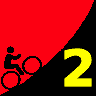
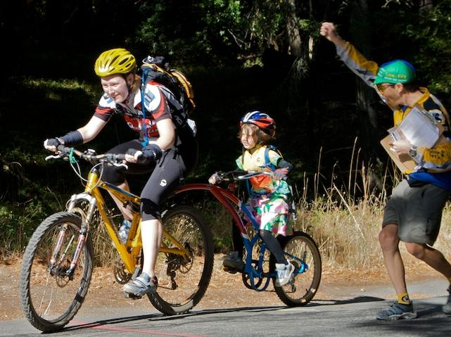

|  |
2009 Low-Key Hillclimbs Week 2 Results: OLH 10 Oct 2009 |
|  |
| Meredith Nader (Pen Velo) pushes her mother over the line to take a commanding lead in the 5-and-under juniors ranking. (Josh Hadley, Through the Lens) |
nWow! What a day. First across the line, Bill Bushnell (Low-Key) putting up a time only a top pro tour rider could be expected to match, with the help of course of his electric motor.
But while his faired recumbent isn't worth any draft, it did provide a rabbit for Chris Phipps (Western Wheelers) to chase, and he blitzed the hill in a Low-Key record 15:36. Also bettering Tracy Colwell's 16-even from 1996 was an impressive Justin Lucke, crossing in 15:59. Brian Lucido was third. In all, six self-propelled riders broke 17 minutes, twenty broke 18 minutes, and 51 broke the special twenty-minute barrier. Fantastic!!!
In the women's field, it was all about Sisters and Misters of No Mercy. Janet Martinez led her troops home with an excellent 21:26. Mei Xi (Mud 'n' crud) was second, followed by Mary Elllen Allen, supporting the SAMONM effort and taking a commanding lead in the women's 55+ category with her 22:16, backing up her 2008 US National Championship in the pursuit. Daniela Becker of Roaring Mouse, having ridden to the start from San Francisco, was next, followed by Lisa Hern, also of SAMONM.
Those big three results gave the Sister's and Mister's of No Mercy the team lead both for the climb and for the overall. Meanwhile, for the second week in a row the Western Wheelers beat out LGBRC by a pathologically small margin, this time 0.07 points (around 0.9 seconds). This is equivalent to the top 3 finishers from LGBRC shaving an extra 80 grams off their combined weights, making liberal assumptions. It was that close.
Stand-out category results included Meredith Nader taking a commanding lead in the junior girl's 5 and under, pushing her mother Amy up the hill to also take the lead in the tandem category. Her dad wasn't bad either, joining the sub-18 club with his 17:57. And Low-Key regular Steve Nash rode the hill on his unicycle, almost matching Bill Bushnell's electric-assisted result in the speed-per-wheel ranking, with his amazing time of 27:11. Nash bettered his time from 2006 of 27:52. And we had three junior boys this week, led by Andre Swart (Ryro), followed by 14 year old Cameron Beene (Alameda), and Jethro Chan.
Thanks to all for coming out! A fantastic day, helped all the more by coordinator Doug Simpkinson's excellent organization. It isn't easy with this many riders.
Thanks to coordinator Doug Simpkinson, with help from Brenda Brunner, Bill Bushnell, Cara Coburn, Dan Connelly, Josh Hadley, Martin Hyland, Howard Kveck, Greg McQuaid, Eric Murray, Pat Parseghian, Chris Phipps, Wojtek Poppe, Dick Robinson, Tim Sutton, Dan Talayco, and Eric Weigle for making today's climb possible!median time = 13:09
pl # rider team category time mph fph score 1 6 Bill Bushnell Low-Key Hybrid 13:09 15.29 5886 100.00
median time = 21:03
pl # rider team category time mph fph score 1 66 Christopher Phipps Western Wheelers 35+ 15:35 12.90 4967 135.08 2 40 Justin Lucke LGBRC 35+ 15:57 12.60 4853 131.97 3 214 Brian Lucido Sr's & Mr's of No Mercy 30+ 15:58 12.59 4848 131.84 4 28 Ciaran Byrne 16:43 12.02 4630 125.92 5 129 Ammon Skidmore Team Roaring Mouse 30+ 16:51 11.93 4593 124.93 6 49 Eric Balfus LGBRC 16:53 11.91 4584 124.68 7 162 Jon Ornstil VOS 45+ 17:04 11.78 4535 123.34 8 194 Ken Spencer Western Wheelers 30+ 17:05 11.77 4531 123.22 9 239 Krishna Dole Mud 'n' Crud Unreformed Mt. Biker 17:09 11.72 4513 122.74 10 101 Mark Edwards Bike Trip 45+ 17:16 11.64 4483 121.91 11 58 Clark Foy Metrigear 45+ 17:17 11.63 4478 121.79 12 93 Thomas Novikoff Webcor/Alto Velo 2 17:27 11.52 4436 120.63 13 151 Doug Philippone Palantir 35+ 17:28 11.51 4431 120.52 14 156 Rich Hill LGBRC 40+ 17:32 11.46 4414 120.06 15 32 Nils Tikkanen Bike Trip 3 17:41 11.37 4377 119.04 16 7 James Porter Western Wheelers 3 17:46 11.31 4356 118.48 17 201 Rune Dahl Western Wheelers 45+ 17:47 11.30 4352 118.37 18 139 Laurent Pfertzel 45+ 17:53 11.24 4328 117.71 19 179 David Nader Pen Velo/Pomodoro 35+ 17:55 11.22 4320 117.49 20 144 Andy Brisnehan Western Wheelers 50+ 17:56 11.21 4316 117.38 21 315 Tom Gardin 45+ 18:03 11.14 4288 116.62 22 355 Goeric Daeninck 18:10 11.06 4261 115.87 23 283 Geoff Drake Bike Trip 50+ 18:12 11.04 4253 115.66 23 98 Bruce Gardner Sr's & Mr's of No Mercy 35+ 18:12 11.04 4253 115.66 25 168 Andrew Evans Webcor/Alto Velo 35+ 18:21 10.95 4218 114.71 26 259 Matt Wocasek Bike Trip 3 18:29 10.87 4188 113.89 27 243 Jeff Farnsworth San Jose Bike Club 50+ 18:39 10.78 4150 112.87 28 223 Barrett Ausman Webcor/Alto Velo 4 18:42 10.75 4139 112.57 29 80 Bill Davis Google 25-29 18:48 10.69 4117 111.97 30 192 Michael Simos LGBRC 35+ 18:50 10.67 4110 111.77 31 307 Justin China 30+ 18:52 10.65 4102 111.57 32 110 Shon Grabbe San Jose Bike Club 35+ 18:56 10.62 4088 111.18 33 204 Aaron Paterson Unattached 3 19:07 10.51 4049 110.11 34 220 Ben Weir Bikeforums.net 25-29 19:15 10.44 4021 109.35 35 53 Jim Langley Bike Trip 55+ 19:16 10.43 4017 109.26 36 291 Tim Sawyer Bike Trip 45+ 19:17 10.42 4014 109.16 37 199 Mark Debbage 40+ 19:19 10.41 4007 108.97 38 42 Nick Pelly Google 19:24 10.36 3990 108.51 39 138 Carmelo Rios Plus 3 50+ 19:29 10.32 3973 108.04 40 244 Michael Barnes 19:32 10.29 3962 107.76 40 276 Adam Brinkman 25-29 19:32 10.29 3962 107.76 42 260 Leslie Oglesby Monterey Bay Racing Team 35+ 19:34 10.27 3956 107.58 43 157 Joe Fabris Plus 3 50+ 19:35 10.26 3952 107.49 44 74 Benoit Pelczar Bike Trip 35+ 19:36 10.26 3949 107.40 45 212 Joe Karbowski 19:38 10.24 3942 107.22 46 59 Scott Martin Bike Trip 50+ 19:39 10.23 3939 107.12 46 96 Phil Dubach Western Wheelers 35+ 19:39 10.23 3939 107.12 48 120 Peter Mehlitz 45+ 19:40 10.22 3936 107.03 49 300 Liam Stewart Team Roaring Mouse 19:43 10.19 3926 106.76 50 79 Gino Cetani Western Wheelers 35+ 19:46 10.17 3916 106.49 51 316 Christian Paquet Doogie 50+ 19:56 10.08 3883 105.60 52 279 Troy Folkner Western Wheelers 55+ 19:59 10.06 3873 105.34 53 62 Gary Broeder San Jose Bike Club 55+ 20:01 10.04 3867 105.16 54 33 Martin Hyland Western Wheelers 50+ 20:04 10.02 3857 104.90 55 115 Martin Hampton Pen Velo/Pomodoro 45+ 20:06 10.00 3851 104.73 55 287 Stewart Thompson Pen Velo/Pomodoro 5 20:06 10.00 3851 104.73 57 97 Wajtek Poppe Out Of Shape Dad 20:07 9.99 3848 104.64 58 263 Nicholas Konwest Fresh Fish 20:09 9.98 3841 104.47 59 255 John Becker Team Roaring Mouse 5 20:18 9.90 3813 103.69 60 348 Winston Teear Team Tubby 25-29 20:20 9.89 3807 103.52 61 20 Alan Weatherall San Jose Bike Club 45+ 4 20:29 9.81 3779 102.77 62 137 Neal Herman Spike the Wonder Dog 50+ 20:32 9.79 3769 102.52 63 236 Peter Plackowski 20-24 20:35 9.77 3760 102.27 64 140 Gary Shockey 35+ 20:36 9.76 3757 102.18 65 237 Kurt Liittschwager Team Tubby 45+ 20:40 9.73 3745 101.85 66 78 Brian Sterling 20:41 9.72 3742 101.77 67 85 John Carrino Palantir 25-29 20:44 9.69 3733 101.53 68 299 Michel Williams Sr's & Mr's of No Mercy 20:48 9.66 3721 101.20 69 323 Bart Johnson SLACer 40+ 20:53 9.62 3706 100.80 70 227 Sandor Dornbush Google 5 20:56 9.60 3697 100.56 71 114 Andre Swart Ryro Junior 21:10 9.50 3657 99.45 72 158 Ramon Ochoa Bikeforums.net 35+ 21:13 9.47 3648 99.21 73 26 Ben Stern Team Roaring Mouse 30+/Fixed 21:18 9.44 3634 98.83 73 75 Dan Cervelli Palantir 21:18 9.44 3634 98.83 75 73 Vince Cummings 21:20 9.42 3628 98.67 76 136 Fred Egley Dos Egley's 45+ 21:21 9.41 3625 98.59 77 229 Christopher O'Keefe 21:22 9.41 3622 98.52 78 189 Donald Lee Bikeforums.net 35+ 21:23 9.40 3620 98.44 78 29 Thomas Rabedeau SLACer 50+ 21:23 9.40 3620 98.44 78 269 Jeff Shute Google 30+ 21:23 9.40 3620 98.44 81 331 Daniel Harrington SLACer 40+ 21:28 9.36 3606 98.06 82 56 David Vrane SLACer 45+ 21:32 9.33 3594 97.76 83 146 William Von Kaenel LGBRC 50+ 21:45 9.24 3559 96.78 83 35 Stephen Fong San Jose Bike Club 40+ 21:45 9.24 3559 96.78 85 268 Vince Valvano 21:46 9.23 3556 96.71 86 160 Mike Czepiel Apple 25-29 21:47 9.23 3553 96.63 87 27 Loren Vorreiter Western Wheelers 40+ 21:49 9.21 3548 96.49 88 63 James Deitrich Team Tubby MTB 22:04 9.11 3508 95.39 89 347 Matt Beadon 30+ 22:12 9.05 3486 94.82 90 275 Naoto Sato 40+ 22:14 9.04 3481 94.68 91 185 Pete Petroski Western Wheelers Beyond 22:20 9.00 3466 94.25 92 340 Jan Novak Team Tubby 30+ 22:28 8.95 3445 93.69 93 247 Keijiro Ikebe Livestrong Livestrong 22:34 8.91 3430 93.28 94 284 Ilyas Elkin 25-29 22:35 8.90 3427 93.21 95 324 Paul Melville Doogie 55+ 22:39 8.87 3417 92.94 96 122 Mark Powers Pen Velo/Pomodoro 50+ 22:43 8.85 3407 92.66 97 894 Oliver 22:48 8.82 3395 92.32 98 64 Han Wen 40+ 22:49 8.81 3392 92.26 99 130 Steve Chapel Western Wheelers 65+ 22:56 8.76 3375 91.79 100 332 Jens Weber Doogie 30+ 22:59 8.75 3368 91.59 101 172 Peter Ingram 5 23:00 8.74 3365 91.52 102 277 Ron Songer Out of Shape Dads 50+ 23:03 8.72 3358 91.32 103 91 Patrick Callahan Western Wheelers 40+ 23:08 8.69 3346 90.99 104 69 Nic Brummell Atlas 45+ 23:11 8.67 3339 90.80 104 70 Garry Chinn Silicon Valley Triathlon 23:11 8.67 3339 90.80 106 174 Keith Devlin Western Wheelers 60+ 23:14 8.65 3331 90.60 107 147 Marty Beene Team Alameda 45+ 23:15 8.65 3329 90.54 108 38 Thomas Preisler LGBRC 50+ 23:29 8.56 3296 89.64 109 267 Brun Dole Blekko Awesome 23:42 8.48 3266 88.82 110 86 Gerald Jeffs Cycling Systems 50+ 23:46 8.46 3257 88.57 111 363 James Dudley 23:49 8.44 3250 88.38 112 154 Eric Sorenson Bikeforums.net 35+ 23:56 8.40 3234 87.95 113 127 Cameron Beene Team Alameda Junior 14 24:15 8.29 3192 86.80 114 251 Christopher Olson Google 5 24:17 8.28 3187 86.68 114 292 Giles Douglas Google 35+ 24:17 8.28 3187 86.68 116 125 Jerrick McCullough 40+ 24:24 8.24 3172 86.27 117 142 Jeff Swan Spike the Wonder Dog 40+ 24:25 8.23 3170 86.21 118 271 Alex Matthews Boston Express 45+ 24:44 8.13 3129 85.11 118 107 Richard Allen Sr's & Mr's of No Mercy 60+ 24:44 8.13 3129 85.11 120 119 Gary Swart Ryro Senior 24:47 8.11 3123 84.94 121 67 Ronald Ng Bikeforums.net Endurance 24:51 8.09 3115 84.71 122 21 Kley Cardona ACTC 45+ 25:01 8.03 3094 84.14 123 371 Jeroem Meiier 35+ 25:04 8.02 3088 83.98 124 116 Kenneth Fong Team Rwanda 45+ 25:30 7.88 3035 82.55 125 252 Chaitanya Gharpure Google 25-29 25:34 7.86 3027 82.33 126 169 Rich Karlgaard Old Guys 55+ 25:39 7.84 3018 82.07 127 253 Chris Chang Old & slow 45+ 25:48 7.79 3000 81.59 128 200 Jethro Chan Junior 26:05 7.71 2967 80.70 129 117 Bob Corman Spike the Wonder Dog 50+ 26:10 7.68 2958 80.45 130 261 Vladimir Ivan Cyclecraft 60+ 26:19 7.64 2941 79.99 131 105 Mark Elstron San Jose Bike Club 5 26:20 7.63 2939 79.94 132 89 Bob Gumaer UID 50+ 26:41 7.53 2901 78.89 133 90 Tim Sutton Plus 3 45+ 27:00 7.44 2867 77.96 134 235 Steve Nash Unicycle 27:09 7.40 2851 77.53 135 126 John Conklin 40+ 27:10 7.40 2849 77.48 136 166 Tom Everman Google 50+ 27:31 7.30 2813 76.50 137 25 Carl Butler Sr's & Mr's of No Mercy 50+ 30:19 6.63 2553 69.43 138 104 David Hrovatin Team Tubby MTB 33:28 6.01 2313 62.90 139 308 Hayrettin Kolukisaoglu Novice 40:36 4.95 1906 51.85 140 295 David Fraser El Camino YMCA Slow 46:41 4.31 1658 45.09
median time = 27:02
pl # rider team category time mph fph score 1 102 Janet Martinez Sr's & Mr's of No Mercy 40+ 21:24 9.39 3617 126.32 2 183 Mei Xi Mud 'n' Crud Another Mt. Biker 21:53 9.19 3537 123.53 3 77 Mary Ellen Allen Sr's & Mr's of No Mercy 55+ 22:14 9.04 3481 121.59 4 339 Daniela Becker Team Roaring Mouse 40+ 24:33 8.19 3153 110.12 5 210 Lisa Hern Sr's & Mr's of No Mercy 4 24:54 8.07 3108 108.57 6 245 Laura Egley Dos Egley's 45+ 25:58 7.74 2981 104.11 7 231 Andrea Ivan Webcor/Alto Velo 55+ 26:18 7.64 2943 102.79 8 228 Carol Sykes LGBRC 4 27:02 7.44 2863 100.00 9 22 Kelly Kasik 29:00 6.93 2669 93.22 10 61 Lisa Emmerich Team Rwanda 45+ 29:05 6.91 2661 92.95 11 4 Pat Parseghian Google 50+ 31:54 6.30 2426 84.74 12 149 Ingrid McCarty Western Wheelers 50+ 32:25 6.20 2388 83.39 13 118 Christine Holmes Low-Key 40+ 34:02 5.91 2274 79.43 14 209 Christina Vaughn Google 50+ 34:14 5.87 2261 78.97 15 202 Ruth Norris Western Wheelers Slow 35:43 5.63 2167 75.69 16 182 Amy Nader Pen Velo/Pomodoro Novice(Tandem) 47:53 4.20 1616 56.46T 16 190 Meredith Nader Pen Velo/Pomodoro Tandem/5 And Under 47:53 4.20 1616 56.46T T : tandem score
pl team score scoring 1 Sr's & Mr's of No Mercy 379.75 (Brian Lucido, Janet Martinez, Mary Ellen Allen) 2 Western Wheelers 376.78 (Christopher Phipps, Ken Spencer, James Porter) 3 LGBRC 376.71 (Justin Lucke, Eric Balfus, Rich Hill) 4 Bike Trip 356.61 (Mark Edwards, Nils Tikkanen, Geoff Drake) 5 Webcor/Alto Velo 347.91 (Thomas Novikoff, Andrew Evans, Barrett Ausman) 6 Team Roaring Mouse 341.80 (Ammon Skidmore, Daniela Becker, Liam Stewart) 7 San Jose Bike Club 329.21 (Jeff Farnsworth, Shon Grabbe, Gary Broeder) 8 Pen Velo/Pomodoro 326.94 (David Nader, Martin Hampton, Stewart Thompson) 9 Google 321.03 (Bill Davis, Nick Pelly, Sandor Dornbush) 10 Palantir 320.87 (Doug Philippone, John Carrino, Dan Cervelli) 11 Bikeforums.net 307.01 (Ben Weir, Ramon Ochoa, Donald Lee) 12 Team Tubby 300.77 (Winston Teear, Kurt Liittschwager, James Deitrich) 13 SLACer 297.30 (Bart Johnson, Thomas Rabedeau, Daniel Harrington) 14 Plus 3 293.49 (Carmelo Rios, Joe Fabris, Tim Sutton) 15 Doogie 290.13 (Christian Paquet, Paul Melville, Jens Weber) 16 Spike the Wonder Dog 269.17 (Neal Herman, Jeff Swan, Bob Corman) 17 Mud 'n' Crud 246.27 (Mei Xi, Krishna Dole) 18 Dos Egley's 202.70 (Laura Egley, Fred Egley) 19 Ryro 184.38 (Andre Swart, Gary Swart) 20 Low-Key 179.43 (Bill Bushnell, Christine Holmes) 21 Team Alameda 177.34 (Marty Beene, Cameron Beene) 22 Team Rwanda 175.50 (Lisa Emmerich, Kenneth Fong) 23 VOS 123.34 (Jon Ornstil) 24 Metrigear 121.79 (Clark Foy) 25 Unattached 110.11 (Aaron Paterson) 26 Monterey Bay Racing Team 107.58 (Leslie Oglesby) 27 Apple 96.63 (Mike Czepiel) 28 Livestrong 93.28 (Keijiro Ikebe) 29 Out of Shape Dads 91.32 (Ron Songer) 30 Silicon Valley Triathlon 90.80 (Garry Chinn) 30 Atlas 90.80 (Nic Brummell) 32 Blekko 88.82 (Brun Dole) 33 Cycling Systems 88.57 (Gerald Jeffs) 34 Boston Express 85.11 (Alex Matthews) 35 ACTC 84.14 (Kley Cardona) 36 Old Guys 82.07 (Rich Karlgaard) 37 Old & slow 81.59 (Chris Chang) 38 Cyclecraft 79.99 (Vladimir Ivan) 39 UID 78.89 (Bob Gumaer) 40 El Camino YMCA 45.09 (David Fraser)